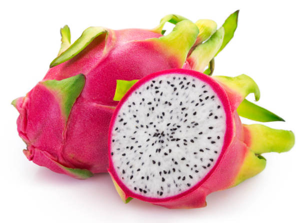

Benefits
-
Apple
Apples are rich in antioxidants in the form of quercetin, a plant flavonoid group
of polyphenols, which can help reduce inflammation, regulate brain chemicals, support brain function,
and maintain a healthy gut microbiome. Apples are also a great source of pectin, a soluble fiber that
promotes healthy gut bacteria.
-
Banana
Bananas are a good source of potassium, magnesium, vitamin B6, and other important
nutrients. They're good for digestive and heart health. You can eat this tropical fruit raw, or add it
to smoothies or baked goods.
-
Orange
Anti-oxidants in oranges help protect skin from free radical damage known to cause
signs of aging. An orange a day can help you look young even at 50! Oranges, being rich in Vitamins B6,
help support the production of haemoglobin and also help keep blood pressure under check due to the
presence of magnesium.
-

Kiwi
Eating three kiwi fruits per day can help boost your immune system, improve your
digestion, and increase your energy levels. Additionally, kiwi can help fight inflammation, reduce the
risk of heart disease, and promote healthy skin.
-
Strawberry
Antioxidants in strawberries, including vitamin C, can support your immune system
and may lower your chances of getting sick when you're around germs. They may also help curb
inflammation, manage your blood sugar, and guard against health conditions like high cholesterol,
cancer, heart disease, stroke, and diabetes.
-
Mango
Mangoes are also rich in vitamin C, which is important for forming blood vessels
and healthy collagen, as well as helping you heal. Mangoes are rich in beta-carotene, a pigment
responsible for the yellow-orange color of the fruit. Beta-carotene is an antioxidant, just one of
many found in mangoes.
-
Blueberry
Blueberries are a healthy, stress-free food. You get fiber, vitamin C, vitamin K,
manganese and potassium in every handful of blueberries – at just 80 calories per cup. They're also
low in sodium and have virtually no fat. It just feels good to feel good about what you eat.
-
Pear
Pears contain high levels of antioxidants, including vitamin C, vitamin K, and
copper. These chemicals counter the effects of free radicals , protecting cells from the damage they
can cause.
-

Dragon fruit
Dragon fruit provides vitamin C and riboflavin, along with about 17% of your daily
recommended intake of magnesium—a mineral responsible for aiding in hundreds of biochemical reactions
in the body. Dragon fruit also contains iron, niacin, and calcium
-
Pineapple
Pineapple is high in vitamin C, which helps your immune system -- the body's
defense against germs -- keep you healthy. It also has: Vitamins A, B6, E, and K